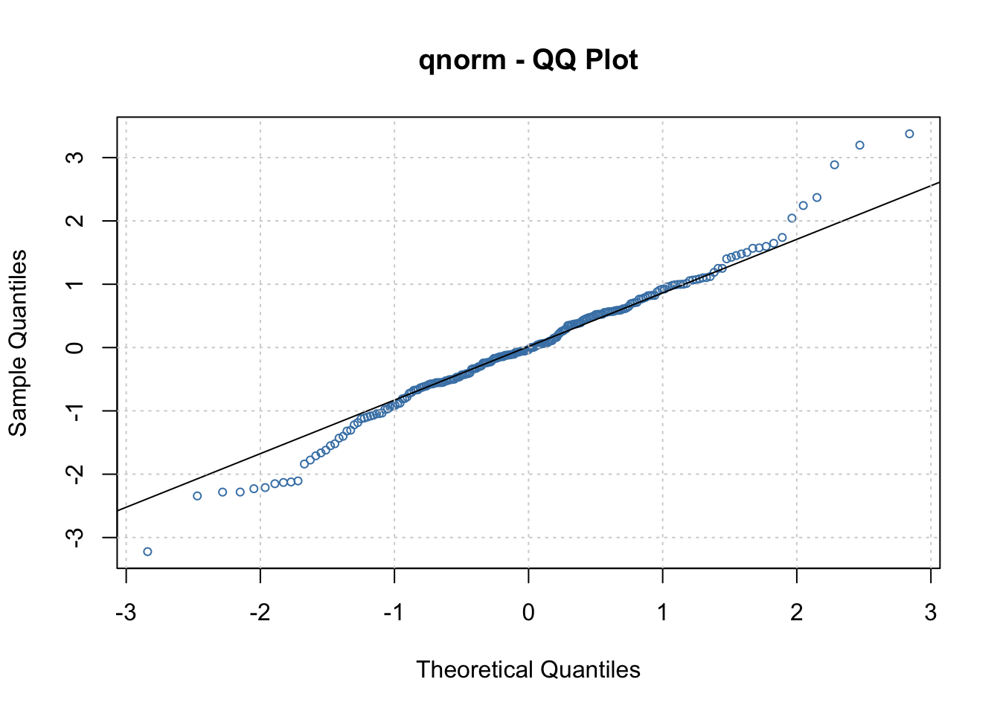

Chapter 22 ARCH Models
22.1 ARCH Models- Introduction
Nobel Prize in Economic Sciences: https://www.nobelprize.org/prizes/economic-sciences/2003/summary
ARCH models are time series models for hetereoscedastic error terms, i.e., models for when \(\sigma^2_{w,t}\) depends on t. In this section, \(\sigma^2_{w,t}\) will be denoted by \(\sigma^2_t\)
ARCH stands for autoregressive conditionally hetereoscedastic. The generalization of these models to be discussed later are GARCH models with the G meaning “generalized”.
22.1.1 When to use this models?
Sometimes in a time series plot, the variation is small, then large for a small period of time, then the variation goes back to being small again. Examples of where this happens:
- stock or bond prices
- money exchange rates
In the ARIMA modeling framework, what is usually done is the following:
- Suppose \(x_t\) denotes the series that appears to have non-constant variance.
- A common method to handle this is to use the natural log of the series, log(\(x_t\)).
- This series will often appear to be nonstationary in the mean, so a solution to that problem is first differences: \(y_t = log(x_t) – log(x_{t-1})\). Notice that \(y_t\) has a mean of 0.
- This \(y_t\) series ACF and PACF will often look like the ACF and PACF from a white noise process leaving the model to be ARIMA(0,1,0) for \(y_t\)! This corresponds to the “efficient market hypothesis” discussed in finance that stock prices follow a random walk.
A closer look at \(y_t\) reveals the following,
\[y_t=log(x_t)-log(x_{t-1})\\=log(x_t/x_{t-1})\\=log(current \quad value/ past \quad value)\]
This is somewhat similar to a “return” for an investment, defined as
\(r_t=\frac{x_t-x_{t-1}}{x_{t-1}}\)
For example, if a stock price at the end of trading the previous day is 50 and at the end of today it was 60, the return would be:
\(r_t=(60-50)/50=0.2\)
Thus, the stock went up 20%.
Other types of structures are often still present in \(y_t\) which would lead to an additional model:
- The distribution of \(y_t\) has “heavier” tails than a normal distribution (remember the relationship between a t-distribution with say 5 degrees of freedom and a standard normal distribution).
- The \(y_t^2\) are correlated and often the correlation is non-negative.
- The changes in \(y_t\) tend to be clustered. Because of this clustering, one could say there is dependence in the variability or “volatility” of observed values.
Example 22.1 Monthly returns of value-weighted S&P 500 Index from 1926 to 1991 (SP500.R)
This data set is taken from Pena, Tiao, and Tsay’s textbook. The data set is already in the returns rt format. Notice the changes in the variability (and their corresponding dates).
sp500 <- read.table(file = "sp500.txt",
header = FALSE, col.names = "x", sep = "")
head(sp500)## x
## 1 0.0225
## 2 -0.0440
## 3 -0.0591
## 4 0.0227
## 5 0.0077
## 6 0.0432x <- ts(data = sp500$x, start = 1926, deltat = 1/12)
x## Jan Feb Mar Apr May Jun Jul Aug Sep
## 1926 0.0225 -0.0440 -0.0591 0.0227 0.0077 0.0432 0.0455 0.0171 0.0229
## 1927 -0.0208 0.0477 0.0065 0.0172 0.0522 -0.0094 0.0650 0.0445 0.0432
## 1928 -0.0051 -0.0176 0.1083 0.0324 0.0127 -0.0405 0.0125 0.0741 0.0240
## 1929 0.0571 -0.0058 -0.0023 0.0161 -0.0428 0.1124 0.0456 0.0980 -0.0489
## 1930 0.0625 0.0215 0.0799 -0.0095 -0.0165 -0.1646 0.0367 0.0075 -0.1301
## 1931 0.0489 0.1144 -0.0692 -0.0959 -0.1372 0.1390 -0.0742 0.0095 -0.2994
## 1932 -0.0283 0.0507 -0.1182 -0.2025 -0.2333 -0.0089 0.3770 0.3754 -0.0369
## 1933 0.0073 -0.1844 0.0336 0.4222 0.1587 0.1317 -0.0880 0.1146 -0.1136
## 1934 0.1059 -0.0367 -0.0009 -0.0270 -0.0813 0.0208 -0.1152 0.0541 -0.0055
## 1935 -0.0421 -0.0396 -0.0309 0.0956 0.0323 0.0678 0.0831 0.0217 0.0239
## 1936 0.0655 0.0168 0.0254 -0.0771 0.0458 0.0306 0.0681 0.0088 0.0013
## 1937 0.0378 0.0146 -0.0094 -0.0831 -0.0103 -0.0529 0.1026 -0.0554 -0.1421
## 1938 0.0133 0.0608 -0.2504 0.1412 -0.0443 0.2470 0.0727 -0.0274 0.0149
## 1939 -0.0689 0.0325 -0.1354 -0.0055 0.0623 -0.0638 0.1087 -0.0714 0.1646
## 1940 -0.0352 0.0066 0.0099 -0.0049 -0.2395 0.0766 0.0311 0.0262 0.0095
## 1941 -0.0482 -0.0149 0.0040 -0.0653 0.0043 0.0535 0.0548 -0.0087 -0.0097
## 1942 0.0138 -0.0250 -0.0675 -0.0437 0.0640 0.0184 0.0313 0.0070 0.0267
## 1943 0.0716 0.0506 0.0527 0.0009 0.0449 0.0198 -0.0543 0.0103 0.0237
## 1944 0.0154 -0.0025 0.0169 -0.0125 0.0404 0.0510 -0.0208 0.0087 -0.0031
## 1945 0.0143 0.0616 -0.0462 0.0880 0.0115 -0.0033 -0.0201 0.0580 0.0419
## 1946 0.0697 -0.0695 0.0463 0.0376 0.0224 -0.0391 -0.0255 -0.0729 -0.1015
## 1947 0.0235 -0.0147 -0.0169 -0.0389 -0.0089 0.0526 0.0362 -0.0279 -0.0137
## 1948 -0.0399 -0.0470 0.0771 0.0265 0.0782 0.0030 -0.0532 0.0076 -0.0301
## 1949 0.0013 -0.0394 0.0301 -0.0212 -0.0373 -0.0021 0.0621 0.0120 0.0237
## 1950 0.0173 0.0100 0.0041 0.0451 0.0393 -0.0580 0.0085 0.0325 0.0559
## 1951 0.0612 0.0065 -0.0183 0.0481 -0.0406 -0.0260 0.0687 0.0393 -0.0009
## 1952 0.0156 -0.0365 0.0477 -0.0431 0.0232 0.0461 0.0176 -0.0146 -0.0196
## 1953 -0.0072 -0.0182 -0.0236 -0.0265 -0.0032 -0.0163 0.0253 -0.0578 0.0013
## 1954 0.0512 0.0027 0.0302 0.0490 0.0329 0.0007 0.0572 -0.0340 0.0831
## 1955 0.0181 0.0035 -0.0049 0.0377 -0.0013 0.0823 0.0607 -0.0078 0.0113
## 1956 -0.0365 0.0347 0.0693 -0.0021 -0.0657 0.0392 0.0515 -0.0381 -0.0455
## 1957 -0.0418 -0.0326 0.0196 0.0370 0.0369 -0.0013 0.0114 -0.0561 -0.0619
## 1958 0.0428 -0.0206 0.0309 0.0318 0.0150 0.0261 0.0431 0.0119 0.0484
## 1959 0.0038 -0.0002 0.0005 0.0388 0.0189 -0.0036 0.0349 -0.0150 -0.0456
## 1960 -0.0715 0.0092 -0.0139 -0.0175 0.0269 0.0195 -0.0248 0.0261 -0.0604
## 1961 0.0632 0.0269 0.0255 0.0038 0.0191 -0.0288 0.0328 0.0196 -0.0197
## 1962 -0.0379 0.0163 -0.0059 -0.0620 -0.0860 -0.0818 0.0636 0.0153 -0.0482
## 1963 0.0491 -0.0289 0.0355 0.0485 0.0143 -0.0202 -0.0035 0.0487 -0.0110
## 1964 0.0269 0.0099 0.0152 0.0061 0.0115 0.0164 0.0182 -0.0162 0.0287
## 1965 0.0332 -0.0015 -0.0145 0.0342 -0.0077 -0.0486 0.0134 0.0225 0.0320
## 1966 0.0049 -0.0179 -0.0218 0.0205 -0.0541 -0.0161 -0.0135 -0.0778 -0.0070
## 1967 0.0782 0.0020 0.0394 0.0422 -0.0524 0.0175 0.0453 -0.0117 0.0328
## 1968 -0.0438 -0.0312 0.0094 0.0819 0.0112 0.0091 -0.0185 0.0115 0.0385
## 1969 -0.0082 -0.0474 0.0344 0.0215 -0.0022 -0.0556 -0.0602 0.0401 -0.0250
## 1970 -0.0765 0.0527 0.0015 -0.0905 -0.0610 -0.0500 0.0733 0.0445 0.0330
## 1971 0.0405 0.0091 0.0368 0.0363 -0.0416 0.0007 -0.0413 0.0361 -0.0070
## 1972 0.0181 0.0253 0.0059 0.0044 0.0173 -0.0218 0.0023 0.0345 -0.0049
## 1973 -0.0171 -0.0375 -0.0014 -0.0408 -0.0189 -0.0066 0.0380 -0.0367 0.0401
## 1974 -0.0100 -0.0036 -0.0233 -0.0391 -0.0336 -0.0147 -0.0778 -0.0903 -0.1193
## 1975 0.1228 0.0599 0.0217 0.0473 0.0441 0.0443 -0.0677 -0.0211 -0.0346
## 1976 0.1183 -0.0114 0.0307 -0.0110 -0.0144 0.0409 -0.0081 -0.0051 0.0226
## 1977 -0.0505 -0.0217 -0.0140 0.0002 -0.0236 0.0454 -0.0162 -0.0210 -0.0025
## 1978 -0.0615 -0.0248 0.0249 0.0854 0.0042 -0.0176 0.0539 0.0259 -0.0073
## 1979 0.0397 -0.0365 0.0552 0.0017 -0.0263 0.0387 0.0087 0.0531 0.0000
## 1980 0.0576 -0.0044 -0.1018 0.0411 0.0466 0.0270 0.0650 0.0058 0.0252
## 1981 -0.0457 0.0133 0.0360 -0.0235 -0.0017 -0.0104 -0.0022 -0.0621 -0.0538
## 1982 -0.0175 -0.0605 -0.0102 0.0400 -0.0392 -0.0203 -0.0230 0.1160 0.0076
## 1983 0.0331 0.0190 0.0331 0.0749 -0.0123 0.0352 -0.0330 0.0113 0.0102
## 1984 -0.0092 -0.0389 0.0135 0.0055 -0.0594 0.0175 -0.0165 0.1063 -0.0035
## 1985 0.0741 0.0087 -0.0029 -0.0046 0.0541 0.0121 -0.0048 -0.0120 -0.0347
## 1986 0.0024 0.0715 0.0528 -0.0141 0.0502 0.0141 -0.0587 0.0712 -0.0854
## 1987 0.1318 0.0369 0.0264 -0.0115 0.0060 0.0479 0.0482 0.0350 -0.0242
## 1988 0.0404 0.0418 -0.0333 0.0094 0.0032 0.0433 -0.0054 -0.0386 0.0397
## 1989 0.0711 -0.0289 0.0208 0.0501 0.0351 -0.0079 0.0884 0.0155 -0.0065
## 1990 -0.0688 0.0085 0.0243 -0.0269 0.0920 -0.0089 -0.0052 -0.0943 -0.0512
## 1991 0.0415 0.0673 0.0222 0.0003 0.0386 -0.0479 0.0449 0.0196 -0.0191
## Oct Nov Dec
## 1926 -0.0313 0.0223 0.0166
## 1927 -0.0531 0.0678 0.0190
## 1928 0.0145 0.1199 0.0029
## 1929 -0.1993 -0.1337 0.0253
## 1930 -0.0888 -0.0218 -0.0742
## 1931 0.0844 -0.0978 -0.1453
## 1932 -0.1386 -0.0589 0.0519
## 1933 -0.0885 0.1027 0.0223
## 1934 -0.0319 0.0829 -0.0042
## 1935 0.0751 0.0393 0.0371
## 1936 0.0750 0.0041 -0.0058
## 1937 -0.1017 -0.1011 -0.0504
## 1938 0.0760 -0.0334 0.0377
## 1939 -0.0146 -0.0491 0.0238
## 1940 0.0394 -0.0424 -0.0028
## 1941 -0.0686 -0.0421 -0.0451
## 1942 0.0644 -0.0138 0.0517
## 1943 -0.0132 -0.0755 0.0590
## 1944 0.0000 0.0039 0.0351
## 1945 0.0303 0.0324 0.0099
## 1946 -0.0080 -0.0115 0.0429
## 1947 0.0212 -0.0285 0.0207
## 1948 0.0678 -0.1082 0.0305
## 1949 0.0295 0.0012 0.0436
## 1950 0.0041 -0.0010 0.0461
## 1951 -0.0138 -0.0026 0.0389
## 1952 -0.0008 0.0465 0.0355
## 1953 0.0510 0.0090 0.0020
## 1954 -0.0195 0.0808 0.0508
## 1955 -0.0305 0.0749 -0.0007
## 1956 0.0051 -0.0110 0.0353
## 1957 -0.0321 0.0161 -0.0415
## 1958 0.0254 0.0224 0.0520
## 1959 0.0113 0.0132 0.0276
## 1960 -0.0024 0.0403 0.0463
## 1961 0.0283 0.0393 0.0032
## 1962 0.0044 0.1016 0.0135
## 1963 0.0322 -0.0105 0.0244
## 1964 0.0081 -0.0052 0.0039
## 1965 0.0273 -0.0088 0.0090
## 1966 0.0475 0.0031 -0.0015
## 1967 -0.0291 0.0011 0.0263
## 1968 0.0072 0.0480 -0.0416
## 1969 0.0442 -0.0353 -0.0187
## 1970 -0.0114 0.0474 0.0568
## 1971 -0.0418 -0.0025 0.0862
## 1972 0.0093 0.0456 0.0118
## 1973 -0.0013 -0.1139 0.0166
## 1974 0.1630 -0.0532 -0.0202
## 1975 0.0616 0.0247 -0.0115
## 1976 -0.0222 -0.0078 0.0525
## 1977 -0.0434 0.0270 0.0028
## 1978 -0.0916 0.0166 0.0149
## 1979 -0.0686 0.0426 0.0168
## 1980 0.0160 0.1024 -0.0339
## 1981 0.0491 0.0366 -0.0301
## 1982 0.1104 0.0361 0.0152
## 1983 -0.0152 0.0174 -0.0088
## 1984 -0.0001 -0.0151 0.0224
## 1985 0.0425 0.0651 0.0451
## 1986 0.0547 0.0215 -0.0283
## 1987 -0.2176 -0.0853 0.0729
## 1988 0.0260 -0.0189 0.0147
## 1989 -0.0252 0.0165 0.0214
## 1990 -0.0067 0.0599 0.0248
## 1991 0.0119 -0.0439 0.1116plot(x = x, ylab = expression(x[t]), xlab = "t", type =
"l", col = "red",main = "S&P 500 data series")
points(x = x, pch = 20, col = "blue")
abline(v = c(1930, 1940, 1950, 1960, 1970, 1980, 1990),
lty = "dotted", col = "gray")
abline(h = c(-0.2, 0, 0.2, 0.4), lty = "dotted", col =
"gray") Example 22.2 Simulated ARCH(2) data with \(\alpha_0 = 0.1, \alpha_1 = 0.5, \alpha_2 = 0.2, n = 10,000\) (arch2.R)
Data is simulated from the model above. Don’t worry about the name yet! For now, just understand that this series is example of where there is dependence in the variability. See the program for the code (after we do a model fitting example).
Suppose the series is denoted by \(x_t\).
library(fGarch)## NOTE: Packages 'fBasics', 'timeDate', and 'timeSeries' are no longer
## attached to the search() path when 'fGarch' is attached.
##
## If needed attach them yourself in your R script by e.g.,
## require("timeSeries")set.seed(8111)
spec <- garchSpec(model = list(omega = 0.1, alpha = c(0.5, 0.2), beta = 0))
x <- garchSim(spec = spec, n = 10000)
# write.csv(x = y, file = "arch2.csv", quote = FALSE, row.names = FALSE)
plot(x = 1:10000, y = x, ylab = expression(x[t]), xlab = "t", type = "l", col = "red",
main = "ARCH(2) model simulated data")Around time \(\approx\) 2000 and various other places, there is more variability than which appears in the rest of the series.
par(mfrow = c(2,2))
acf(x = x, type = "correlation", lag.max = 20, xlim = c(1,20), ylim = c(-1,1), xlab = "h",
main = expression(paste("Estimated ACF for ", x[t])))
pacf(x = x, lag.max = 20, ylim = c(-1,1), xlim = c(1,20), xlab = "h",
main = expression(paste("Estimated PACF for ", x[t])))
acf(x = x^2, type = "correlation", lag.max = 20, xlim = c(1,20), ylim = c(-1,1), xlab = "h",
main = expression(paste("Estimated ACF for ", x[t]^2)))
pacf(x = x^2, lag.max = 20, ylim = c(-1,1), xlim = c(1,20), xlab = "h",
main = expression(paste("Estimated PACF for ", x[t]^2)))According to the ACF and PACF of \(x_t\), the data appear to be white noise! However, take a look at the ACF and PACF of \(x_t^2\). It looks like an AR(3) model would be appropriate to model \(x_t^2\)! (Note: Actually it should have shown up to be AR(2))
22.1.2 ARCH(1) model
Understanding the variability is important in finance because investors expect higher returns as compensation for higher degrees of volatility (think of this as risk).
Consider a model that allows dependence in the variances of \(y_t\), denoted by \(\sigma_t^2\). Below is the ARCH(1) model:
\(y_t=\sigma_t\epsilon_t\) where \(\sigma_t^2=\alpha_0+\alpha_1y^2_{t-1}\) and \(\epsilon_t\sim ind(0,1)\)
Notes:
- \(y_t\) has a mean of 0. Thus, the time series of interest could be \(x_t\) with \(y_t = x_t -\mu\). Alternatively, possible values of \(y_t\) are \(y_t = (1-B)x_t\), \(y_t = (1-B)log(x_t)\), or \(y_t = (1-B)x_t / x_t = r_t\).
- Relate this model to what we would have for an ARMA(0,0) model for \(y_t\) before: \(y_t = w_t\) where \(w_t \sim ind.(0,\sigma^2)\). We could have instead used \(y_t = \sigma w_t\) where \(w_t \sim ind.(0,1)\).
- We could even state the model as
\(x_t = \mu + w_t\)
where \(w_t \sim ind.(0, \sigma_t^2), \sigma_t^2= \alpha_0 + \alpha_1y^2_{t-1}, y_t = x_t - \mu\).
- Because the variance changes, this is where the H part of the ARCH name comes about.
- For now, t will be taken as having a normal distribution.
- The \(\alpha_0\) and \(\alpha_1\) parameters have constraints on possible values they can take on so that \(\sigma_t^2 > 0\). For example, \(\alpha_1 > 0\) to make sure \(\sigma_t^2> 0\) for any \(\alpha_0\). More specific constraints are given later.
- One can think of this as \(y_t\) is white noise with variance depending on the past.
- Also, one may need to find an ARMA model for the original series \(x_t\) itself if it has autocorrelation in it. We can then work with the residuals as \(y_t\) to find an ARCH model. We will discuss finding an ARMA model and ARCH model together later in the notes.
- You could rewrite the model as \(y_t=\sqrt{\alpha_0+\alpha_1y^2_{t-1}}\epsilon_t\)
- Conditional on \(y_{t-1}\), \(y_t\) has a normal distribution, i.e., \(y_t|y_{t-1} \sim N(0, \alpha_0+\alpha_1y^2_{t-1})\)
Thus, if you know the value of \(y_{t-1}\), \(yt\) has a normal distribution with mean 0 and variance \(\alpha_0+\alpha_1y^2_{t-1}\) .
- The above representation means that \(Var(y_t|y_{t-1}) = \sigma^2_t = \alpha_0 + \alpha_1y^2_{t-1}\). Also, because \(E(y_t|y_{t-1}) = 0\),
\[Var(y_t|y_{t-1})=E(y_t^2|y_{t-1})-E(y_t|y_{t-1})^2=E(y_t^2|y_{t-1})-0=E(y_t^2|y_{t-1})\] So, \(E(y_t^2|y_{t-1})=\alpha_0+\alpha_1y^2_{t-1}.\) Thus, the conditional variance of \(y_t\) comes about through previous values of \(y^2_{t-1}\) like an AR(1) model! This is where the AR and C parts of the ARCH name come about!
One could also express the model as
\[y_t^2=\sigma_t^2+y_t^2-\sigma_t^2\\=(\alpha_0+\alpha_1y^2_{t-1})+(\sigma_t\epsilon_t)^2-\sigma_t^2\\=\alpha_0+\alpha_1y^2_{t-1}+\nu_t\] where \(\nu_t=\sigma_t^2(\epsilon_t^2-1)\)
Again, you can think of the ARCH(1) model as an AR(1) model for \(y_t^2\) with \(\nu_t\) as the error term. This error term is different from the usual error term found in an AR(1) model.
The “unconditional” mean of \(y_t\), \(E(y_t)\), is found using the following property:
Let A and B be two random variables. Then \(E_A(A)\), the expected value of A using the marginal distribution of A, can be found using \(E_B[E_{A|B}(A|B)]\) where the second expectation is with respect to the conditional distribution of A given B is known. More generally, \(E_A[g(A)]=E_B\{E_{A|B}[g(A)|B]\}\) where g() is a function of A. For a proof, see Casella and Berger’s textbook.
Using this result, \(E_{y_t}(y_t)=E_{y_{t-1}}[E_{y_t|y_{t-1}}(y_t|y_{t-1})]=E_{y_{t-1}}[0]=0\)
One way to find the “unconditional” variance of \(y_t\) is the following:
\[Var_{y_t}(y_t)=E_{y_t}(y_t^2)-E_{y_t}(y_t)\\ =E_{y_t}(y_t^2)-0\\ =E_{y_{t-1}}[E_{y_t|y_{t-1}}(y_t^2|y_{t-1})]\\ =E_{y_{t-1}}[Var_{y_t|y_{t-1}}(y_t|y_{t-1})+E_{y_t|y_{t-1}}(y_t|y_{t-1})^2]\\ =E_{y_{t-1}}[\alpha_0+\alpha_1y_{t-1}^2+0]\\ =\alpha_0+\alpha_1E_{y_{t-1}}[y^2_{t-1}]\\ =\alpha_0+\alpha_1E_{y_t}[y_t^2]\]
where the last step is the result of \(E_{y_t}(y_t^2)\) must be constant through time since \(y_t^2= \alpha_0+\alpha_1y^2_{t-1} + \nu_t\) is a causal AR(1) process when \(0 \le \alpha_1 < 1\) (not future dependent).
The above representation of the variance leads to the following:
\(Var_{y_t}(y_t)=\frac{\alpha_0}{1-\alpha_1}\)
b/c \(Var_{y_t}(y_t)=\alpha_0+\alpha_1E_{y_t}[y_t^2]\\=\alpha_0+\alpha_1\{Var_{y_t}[y_t]+(E_{y_t}[y_t])^2\}\\=\alpha_0+\alpha_1\{Var_{y_t}[y_t]+0\}\)
The kurtosis for a random variable A is defined to be:
\(\frac{E\{[A-E(A)]^4\}}{E\{[A-E(A)]^2\}^2}=\frac{E\{[A-E(A)]^4\}}{\sigma^4}\)
It measures the peakedness or flatness of a probability distribution function. The larger the value, the more spread out the distribution is. For a standard normal distribution, this becomes \(\frac{E(A^4)}{1^2}=3\)
One can use the moment generating function of a standard normal distribution to figure this out.
The fourth moment for \(y_t\) can be shown to be \(E(y_t^4)=\frac{3\alpha_0^2}{(1-\alpha_1)^2}\frac{1-\alpha_1^2}{1-3\alpha_1^2}\) provided that \(3\alpha_1^2 < 1\) because the fourth moment must be positive (a random variable to the 4th power is always positive). Because we already have the constraint of \(0 \le \alpha_1 < 1\), this means \(0 \le \alpha_1 < \sqrt{1/3}\) .
The kurtosis for yt then becomes \(3\frac{1-\alpha_1^2}{1-3\alpha_1^2} > 3\). Thus, the distribution of \(y_t\) will always have “fatter” tails than a standard normal. Using the “usual” method of finding outliers will find more of them. Pena, Tiao, and Tsay’s textbook says “this is in agreement with the empirical finding that outliers appear more often in asset returns than that implied by an iid sequence of normal random variates.”
Because we have an AR(1) structure for \(y_t^2\), then the autocorrelation between \(y_t^2\) and \(y_{t-h}^2\) is \(\alpha_1^h\ge 0\). The autocorrelation is always greater than 0 because of the constraints on \(\alpha_1\). We can look for this behavior in an ACF plot! This positive autocorrelation allows us to model the phenomenon that changes in \(y_t\) tend to be clustered (i.e., volatile \(y_t\) values lead to more volatile values – think in terms of a stock return).
22.1.3 Parameter estimation
The likelihood can be written out using \(y_t|y_{t-1} \sim ind.N(0, \alpha_0+\alpha_1y^2_{t-1})\). See Shumway and Stoffer’s textbook’s for more on this likelihood function and notice how the first observation is conditioned upon. This function involves writing out a joint probability distribution as a product of conditional probability distributions and one marginal probability distribution.
Given this likelihood, “conditional” maximum likelihood estimation can proceed in a similar manner as maximum likelihood estimation has done before. Standard likelihood methods can be used to find the covariance matrix for parameter estimates.
22.1.4 ARCH(m) model
\(y_t=\sigma_t\epsilon_t\) where \(\sigma_t^2=\alpha_0+\alpha_1y_{t-1}^2+\alpha_2y^2_{t-2}+...+\alpha_my_{t-m}^2\) and \(\epsilon_t \sim ind.N(0,1)\)
Conditions on the parameters are \(\alpha_i \ge 0\) for all i = 1, …, m and \(\alpha_1 + ... + \alpha_m < 1\).
22.1.5 Weaknesses of ARCH models
- The model treats positive and negative returns (\(y_t\)) in the same manner (all \(y_{t-1},...,y_{t-m}\) are taking squares).
- The model is restrictive with regard to what values the \(\alpha_i\) can take on – see the ARCH(1) example.
- The model does not provide new insight to understanding financial time series; only a mechanical way to describe the variance.
- The model often over predicts the volatility because it responds slowly to isolated large shocks to the return series.
22.1.6 GARCH(m,r)
The “G” stands for “Generalized”
\(y_t = \sigma_t\epsilon_t\) where \(\sigma_t^2= \alpha_0 + \alpha_1y^2_{t-1} + … + \alpha_my^2_{t-m]}+ \beta_1\sigma^2_{t-1} + … +\beta_r\sigma_{t-r}^2\) and \(\epsilon_t \sim ind.N(0,1)\)
The additional parameters help incorporate past variances. More will be discussed about this model later
22.2 Simulated Example
There are a number of R packages available to work with these models. Packages include:
tseriesand thegarch()functionfGarchand thegarchFit()functionrugarchand theugarchfit()function
The finance task view at CRAN (http://cran.r-project.org/web/views/Finance.html) gives a summary of these and other packages available for finance data modeling.
The tseries package has limitations for what can be done with the model so we will focus on fGarch. The rugarch package works fine as well, so some examples will be provided with it. Code for the tseries package is available my corresponding programs when it will work for an example.
Example 22.3 Generate data from an ARCH(1) model with \(\alpha_0=0.1, \alpha_1=0.4\) (arch1.R)
Code to simulate data from the model:
set.seed(1532)
n <- 1100
a <- c(0.1, 0.4) #ARCH(1) coefficients - alpha0 and alpha1
e <- rnorm(n = n, mean = 0, sd = 1)
y <- numeric(n) #intializes a vector of y's to be n long
y[1] <- rnorm(n = 1, mean = 0, sd = sqrt(a[1]/(1.0-a[2])))
#start value
for(i in 2:n) #Simulate ARCH(1) process
{
y[i] <- e[i]*sqrt(a[1] + a[2]*y[i-1]^2)
}
y <- y[101:1100] #Drop the first 100 and just call it y again
save.y <- yThe start value for \(y_1\) needs to be set outside the loop. The variance used is \(Var(y_t) = \alpha_0/(1-\alpha_1)\) as found previously in the notes.
Below is a plot of the data. The plot of \(y_t\) shows moments of high volatility in comparison to other time points.
plot(x = y, ylab = expression(y[t]), xlab = "t", type =
"l", col = "red", main = "ARCH(1) simulaed data",
panel.first=grid(col = "gray", lty = "dotted"))
points(x = y, pch = 20, col = "blue")While I used “y” here, we would actually find a model for the mean adjusted version of it.
This data could have been generated more easily by using the garchSim() function in the fGarch package.
library(fGarch)
#Note that beta (sigma^2_t-1 part) needs to be set to something due to a default value of 0.8
set.seed(9129)
spec <- garchSpec(model = list(omega = 0.1, alpha = 0.4,
beta = 0))
x <- garchSim(spec = spec, n = 1000)
head(x)## GMT
## garch
## 2020-08-06 -0.33502258
## 2020-08-07 -0.01923007
## 2020-08-08 -0.27130332
## 2020-08-09 -0.06068358
## 2020-08-10 0.11332049
## 2020-08-11 0.51447406tail(x)## GMT
## garch
## 2023-04-27 0.15444146
## 2023-04-28 0.50981301
## 2023-04-29 0.06590522
## 2023-04-30 0.28678420
## 2023-05-01 0.07107253
## 2023-05-02 -0.69714833- \(x_{1000}=-0.6971\)
plot(x = x, ylab = expression(x[t]), xlab = "t", type =
"l", col = "red", main = "ARCH(1) simulated data",
panel.first = grid(col = "gray", lty = "dotted"))
points(x = x, pch = 20, col = "blue")
Notes:
- I am unable to remove the date information produced by
garchSim(). - The
garchSpec()model specification can be generalized for other versions of a GARCH model. For example, an ARCH(2) model uses the alpha argument to specify \(\alpha_1\) and \(\alpha_2\) (usec()).
In a typical model building situation when you do not know if an ARIMA and/or ARCH model is appropriate, one should find the ACF and PACF for \(x_t\) and \(x_t^2\).
par(mfrow = c(1,2))
acf(x = x, type = "correlation", main = "Est. ACF for
x", ylim = c(-1,1), panel.first = grid(col = "gray",
lty = "dotted"))
pacf(x = x, main = "Est. PACF for x", ylim = c(-1,1),
panel.first = grid(col = "gray", lty = "dotted"))There is not any strong indication of dependence among \(x_t\) for t = 1, …, n. This indicates that an ARIMA model is likely not needed.
par(mfrow=c(1,2))
acf(x = x^2, type = "correlation", main =
expression(paste("Est. ACF for ", x^2)), ylim =
c(-1,1), panel.first = grid(col = "gray", lty =
"dotted"))
pacf(x = x^2, main = expression(paste("Est. PACF for ",
x^2)), ylim = c(-1,1), panel.first = grid(col =
"gray", lty = "dotted"))par(mfrow = c(1,1))There are significant ACF and PACF values for \(x_t^2\). The patterns in these plots are similar to those for an AR(1). Therefore, an ARCH(1) model should be investigated.
# garch(1,0)=grach(m,r)
mod.fit <- garchFit(formula= ~ garch(1,0), data=x, include.mean = TRUE)##
## Series Initialization:
## ARMA Model: arma
## Formula Mean: ~ arma(0, 0)
## GARCH Model: garch
## Formula Variance: ~ garch(1, 0)
## ARMA Order: 0 0
## Max ARMA Order: 0
## GARCH Order: 1 0
## Max GARCH Order: 1
## Maximum Order: 1
## Conditional Dist: norm
## h.start: 2
## llh.start: 1
## Length of Series: 1000
## Recursion Init: mci
## Series Scale: 0.4019932
##
## Parameter Initialization:
## Initial Parameters: $params
## Limits of Transformations: $U, $V
## Which Parameters are Fixed? $includes
## Parameter Matrix:
## U V params includes
## mu -0.26370509 0.2637051 -0.02637051 TRUE
## omega 0.00000100 100.0000000 0.10000000 TRUE
## alpha1 0.00000001 1.0000000 0.10000000 TRUE
## gamma1 -0.99999999 1.0000000 0.10000000 FALSE
## delta 0.00000000 2.0000000 2.00000000 FALSE
## skew 0.10000000 10.0000000 1.00000000 FALSE
## shape 1.00000000 10.0000000 4.00000000 FALSE
## Index List of Parameters to be Optimized:
## mu omega alpha1
## 1 2 3
## Persistence: 0.1
##
##
## --- START OF TRACE ---
## Selected Algorithm: nlminb
##
## R coded nlminb Solver:
##
## 0: 2730.5757: -0.0263705 0.100000 0.100000
## 1: 1406.5130: -0.0263637 1.02096 0.489662
## 2: 1404.7286: -0.0262432 1.03760 0.427583
## 3: 1380.1916: -0.0261965 0.568988 0.212845
## 4: 1368.2039: -0.0178751 0.568012 0.620445
## 5: 1367.6167: -0.00499265 0.675450 0.495844
## 6: 1363.5002: 0.00831181 0.593963 0.428503
## 7: 1363.4602: 0.000981720 0.598204 0.425437
## 8: 1363.4600: 0.00102897 0.598210 0.423962
## 9: 1363.4599: 0.00101890 0.598073 0.424451
## 10: 1363.4599: 0.00102995 0.598125 0.424422
## 11: 1363.4599: 0.00102694 0.598112 0.424423
##
## Final Estimate of the Negative LLH:
## LLH: 452.1397 norm LLH: 0.4521397
## mu omega alpha1
## 0.0004128227 0.0966539778 0.4244229492
##
## R-optimhess Difference Approximated Hessian Matrix:
## mu omega alpha1
## mu -8611.3924 -375.7156 122.5107
## omega -375.7156 -31139.6984 -1737.9325
## alpha1 122.5107 -1737.9325 -369.2304
## attr(,"time")
## Time difference of 0.002430916 secs
##
## --- END OF TRACE ---
##
##
## Time to Estimate Parameters:
## Time difference of 0.01375389 secssummary(mod.fit)##
## Title:
## GARCH Modelling
##
## Call:
## garchFit(formula = ~garch(1, 0), data = x, include.mean = TRUE)
##
## Mean and Variance Equation:
## data ~ garch(1, 0)
## <environment: 0x1149d1e08>
## [data = x]
##
## Conditional Distribution:
## norm
##
## Coefficient(s):
## mu omega alpha1
## 0.00041282 0.09665398 0.42442295
##
## Std. Errors:
## based on Hessian
##
## Error Analysis:
## Estimate Std. Error t value Pr(>|t|)
## mu 0.0004128 0.0108266 0.038 0.97
## omega 0.0966540 0.0066149 14.612 < 2e-16 ***
## alpha1 0.4244229 0.0608758 6.972 3.13e-12 ***
## ---
## Signif. codes: 0 '***' 0.001 '**' 0.01 '*' 0.05 '.' 0.1 ' ' 1
##
## Log Likelihood:
## -452.1397 normalized: -0.4521397
##
## Description:
## Wed May 3 20:10:36 2023 by user:
##
##
## Standardised Residuals Tests:
## Statistic p-Value
## Jarque-Bera Test R Chi^2 0.4202807 0.8104705
## Shapiro-Wilk Test R W 0.9981917 0.3723707
## Ljung-Box Test R Q(10) 15.1952 0.1251057
## Ljung-Box Test R Q(15) 18.0511 0.2599886
## Ljung-Box Test R Q(20) 20.52373 0.4256256
## Ljung-Box Test R^2 Q(10) 3.841834 0.9542001
## Ljung-Box Test R^2 Q(15) 14.25011 0.5066509
## Ljung-Box Test R^2 Q(20) 15.26702 0.7609303
## LM Arch Test R TR^2 5.875025 0.9222503
##
## Information Criterion Statistics:
## AIC BIC SIC HQIC
## 0.9102794 0.9250027 0.9102615 0.9158753\(\hat \mu=0.0004128\)
\(\hat \alpha_0=0.0966540\)
\(\hat \alpha_1=0.4244229\)
\(\sqrt{\hat Var(\hat \alpha_1)}=0.608\)
t-statistics of \(\alpha_1:z=\frac{0.4244}{0.0608}\)
Jarque-Bera and Shapiro-Wilk tests are used to test normality
\(H_0: Normal\)
\(H_1: Not \quad Normal\)
Rstand for residual itself,Q(10)means lags up to lag 10R^2stands for squared residual
Notes:
- The
garchFit()function fits the model. The order of the model is given as (m,r) where m is the order of the ARCH part and r is order of the GARCH part. BE CAREFUL because textbooks and software are not consistent in their orderings. - Use
trace = FALSEto reduce the amount of information given when runninggarchFit(). - A warning message is given when running
garchFit():
Warning message: Using formula(x) is deprecated when x is a character vector of length > 1. Consider formula(paste(x, collapse = ” “)) instead.
Code within the function itself needs to be updated by its authors. - The model for the data is
\(x_t=0.0004128+w_t\) with \(w_t\sim N(0, \hat \sigma^2_t), \hat \sigma_t^2=0.0967+0.4244y^2_{t-1}\), and \(y_t = x_t - 0.0004128\).
Equivalently, we could state the model as \(y_t=\hat \sigma_t\epsilon_t\), where \(\hat \sigma^2_t=0.0967+0.4244y^2_{t-1}, y_t=x_t-0.0004128\), and \(\epsilon_t\sim N(0,1)\)
Notice how close the parameter estimates are to the true parameters (use the standard error to help measure closeness).
The standard tests for whether or not the \(\alpha_0 = 0\) or \(\alpha_1 = 0\) are given in the coefficients table of the output. Both are significantly different from 0 as would be expected. Even though the output says “t value” and “Pr(>|t|)”, a normal distribution approximation is made to the sampling distribution of the test statistic.
The Ljung-Box-Pierce test is the same test as discussed before. This test is performed upon the residuals (
R) and squared residuals (R^2) for lags 10, 15, and 20. All of the p-values are larger indicating there is no dependence remaining in the residuals or squared residuals.A model can be fit to the original simulated data as well. The estimated model is \(\hat \sigma_t^2=\hat \alpha_0+\hat \alpha_1\tilde y^2_{t-1}=0.0990+0.3550\tilde y^2_{t-1}\) with \(\hat \mu = -0.01325\). The code for this estimation is within the program.
#Original series simulated
mod.fit.orig <- garchFit(formula = ~ garch(1, 0), data = save.y, trace = FALSE)
show(mod.fit.orig)##
## Title:
## GARCH Modelling
##
## Call:
## garchFit(formula = ~garch(1, 0), data = save.y, trace = FALSE)
##
## Mean and Variance Equation:
## data ~ garch(1, 0)
## <environment: 0x124d9bdc8>
## [data = save.y]
##
## Conditional Distribution:
## norm
##
## Coefficient(s):
## mu omega alpha1
## -0.013248 0.099037 0.354987
##
## Std. Errors:
## based on Hessian
##
## Error Analysis:
## Estimate Std. Error t value Pr(>|t|)
## mu -0.013248 0.010989 -1.206 0.228
## omega 0.099037 0.006351 15.595 < 2e-16 ***
## alpha1 0.354987 0.052809 6.722 1.79e-11 ***
## ---
## Signif. codes: 0 '***' 0.001 '**' 0.01 '*' 0.05 '.' 0.1 ' ' 1
##
## Log Likelihood:
## -433.8491 normalized: -0.4338491
##
## Description:
## Wed May 3 20:10:36 2023 by user:To view what is inside of mod.fit, we need to use the slotNames() function rather than the usual names() function.
Most of R and its corresponding packages are written in a form very similar to the S programming language. This language was first developed in the 1970s at Bell Laboratories with its main designer being John Chambers. Version 3 of S (S3) is emulated most by R, and this is what was used primarily before this example. Version 4 (S4) is used by the
fGarchandrugarchpackages. The components of an object in S4 are called “slots”. To access a slot, use the syntax<object name>@<slot name>.
i.e., @ in S4 plays as $ in S3
# doesn't work
names(mod.fit)## NULLslotNames(mod.fit)## [1] "call" "formula" "method" "data" "fit"
## [6] "residuals" "fitted" "h.t" "sigma.t" "title"
## [11] "description"tail(mod.fit@fitted)## 2023-04-27 2023-04-28 2023-04-29 2023-04-30 2023-05-01 2023-05-02
## 0.0004128227 0.0004128227 0.0004128227 0.0004128227 0.0004128227 0.0004128227# these are just hat mu- Recall \(x_t=\mu_t+w_t\), so it estimates \(\hat \mu\)
tail(mod.fit@residuals)## [1] 0.15402864 0.50940019 0.06549239 0.28637137 0.07065971 -0.69756116tail(x - mod.fit@fitted)## GMT
## garch
## 2023-04-27 0.15402864
## 2023-04-28 0.50940019
## 2023-04-29 0.06549239
## 2023-04-30 0.28637137
## 2023-05-01 0.07065971
## 2023-05-02 -0.69756116tail(residuals(object = mod.fit))## [1] 0.15402864 0.50940019 0.06549239 0.28637137 0.07065971 -0.69756116tail(mod.fit@sigma.t)## [1] 0.4175212 0.3266854 0.4547382 0.3138064 0.3625745 0.3142818# hat sigma_t
sqrt(0.0966540+0.4244229*(x[999]-0.0004128)^2)## [1] 0.3142818tail(mod.fit@h.t) #sigma.t^2 for us## [1] 0.17432393 0.10672334 0.20678688 0.09847444 0.13146029 0.09877303tail(mod.fit@sigma.t^2)## [1] 0.17432393 0.10672334 0.20678688 0.09847444 0.13146029 0.09877303mod.fit@fit$matcoef[,1] # matrix coefficient## mu omega alpha1
## 0.0004128227 0.0966539778 0.4244229492e <- (x - mod.fit@fit$matcoef[1,1])/mod.fit@sigma.t
tail(e)## GMT
## garch
## 2023-04-27 0.3689122
## 2023-04-28 1.5592990
## 2023-04-29 0.1440222
## 2023-04-30 0.9125735
## 2023-05-01 0.1948833
## 2023-05-02 -2.2195406# Note that these residuals are different
# There residuals are for the ARCH model part itself
# i.e., e= hat epsilon- Recall \(y_t=\sigma_t\epsilon\implies \epsilon=y_t/\sigma_t\)
tail(residuals(object = mod.fit, standardize = TRUE))## [1] 0.3689122 1.5592990 0.1440222 0.9125735 0.1948833 -2.2195406# Can use residuals(object = mod.fit, standardize = TRUE)
# for e
par(mfrow = c(1,2))
acf(x = e, type = "correlation", lag.max = 20, ylim =
c(-1,1), xlab = "h", main = "ARCH residual ACF")
pacf(x = e, lag.max = 20, ylim = c(-1,1), xlab = "h",
main = "ARCH residual PACF")par(mfrow = c(1,1))Notes:
- Notice the
“@fitted”values are all equal to \(\hat \mu = 0.00041\) Why? - The
“@residuals”values are the observed time series minus .
- I found estimates of the residuals for the ARCH part of the model as $e_t = y_t/_t $. You can also obtain these as well by using the
residuals()function with thestandardize = TRUEargument value. - The ACF and PACF plots (not shown above) for \(e_t\) do not show any significant autocorrelations or partial autocorrelations as expected.
The plot() function with the model fitting object leads to a number of plots that can be produced:
plot(mod.fit, which =1)# Selection: 1plot(mod.fit, which =5)# Selection: 5plot(mod.fit, which =10)# Selection: 10plot(mod.fit, which =11)
# Selection: 11plot(mod.fit, which=13)# Selection: 13To produce just one plot, you can use plot(mod.fit, which = 1), where the which argument corresponds to the plot number seen in the list.
Forecasting can be done using the predict() function:
# Forecasts
predict(object = mod.fit, n.ahead = 3, plot = TRUE, nx =
3, conf = 0.95)## meanForecast meanError standardDeviation lowerInterval upperInterval
## 1 0.0004128227 0.5506129 0.5506129 -1.0787687 1.0795943
## 2 0.0004128227 0.4746875 0.4746875 -0.9299576 0.9307833
## 3 0.0004128227 0.4385071 0.4385071 -0.8590452 0.8598709\(\tilde x^{1000}_{1001}=\hat \mu=0.0004128227\)
\(-1.08<x^{1000}_{1001}<1.07959\)
Note that in the graph, 3 on the horizontal axis correponds to 1000, 4 corresponds to 1001,…
How are these forecasts found?
Note: m here represents the number of time points into the future for the forecast, not the order of the GARCH() model
We started with \(x_t\). There are no \(\phi_i\) or \(\theta_j\) parameters in the model so forecasted values are \(\mu\). We also set \(y_t = x_t – \mu\). Note that \(\tilde y^n_{n+m}= E(y_{n+m} | I_n) = 0\). Thus, the forecasted value for \(x_{n+m}\) is \(\hat \mu=0.0004128\) and for \(y_{n+m} = 0\). The variance needed for a CI given by \(Var(x_{n+m}-\tilde x^n_{n+m})=Var(y_{n+m}-\tilde y^n_{n+m})\) because of the simplicity of the model. Then \(Var(y_{n+m}-\tilde y^n_{n+m})=Var(\sigma_{n+m}\epsilon_{n+m})=\sigma^2_{n+m}\) because \(y_{n+m}-\tilde y^n_{n+m}=\sigma_{n+m}\epsilon_{n+m}-0=\sigma_{n+m}\epsilon_{n+m}\)
Our model for \(\sigma_t^2\) is \(\sigma_t^2=\alpha_0+\alpha_1y_{t-1}^2\). Thus, \(\sigma_{n+1}^2=\alpha_0+\alpha_1y^2_{n-1}\)
Substituting the parameter estimates and n = 1000, we obtain
0.0966540 + 0.4244229*(x[1000]-0.0004128)^2## [1] 0.3031746sqrt(0.3031746)## [1] 0.5506129for \(\hat \sigma_{1001}^2\) or equivalently \(\hat \sigma_{1001}=\sqrt{0.3032}=0.5506\), which matches the “standardDeviation” column in the output.
The \((1 - \alpha)100%\) C.I. for \(x_{n+m}\) is \(\tilde x^n_{n+m}\pm Z_{1-\alpha/2}\sqrt{Var(x_{n+m}-\tilde x^n_{n+m})}\)
Substituting the parameter estimates and n = 1000,
sigma.1001 <- sqrt(0.0966540 + 0.4244229*(x[1000] - 0.0004128)^2)
0.0004128 - qnorm(p=0.975)*sigma.1001## [1] -1.0787690.0004128 + qnorm(p=0.975)*sigma.1001## [1] 1.079594which matches the output.
For m = 2, we have \(\sigma^2_{n+2}=\alpha_0+\alpha_1y^2_{n+1}\). We saw earlier in the course notes that \(E(y_t^2|y_{t-1})= \alpha_0 + \alpha_1y^2_{t-1}\). Using this result, we can write \(\sigma_{n+2}^2\) as \(\sigma_{n+2}^2=\alpha_0+\alpha_1(\alpha_0+\alpha_1y^2_n)\)
We find \(\hat \sigma_{1002}\) and the 95% confidence interval for \(x_{1002}\) to be
sigma.1002 <- sqrt(0.0966540 + 0.4244229 * sigma.1001^2)
sigma.1002## [1] 0.47468750.0004128-qnorm(p=0.975)*sigma.1002## [1] -0.92995760.0004128 + qnorm(p=0.975)*sigma.1002## [1] 0.9307832which matches the output.
The rugarch package’s data simulation function ugarchsim() needs to use a model fitting object from ugarchfit() to simulate data. Below is an example of how to fit a model to the original simulated data (save.y) and then to use the resulting model fit object to simulate data.
library(rugarch)## Loading required package: parallel##
## Attaching package: 'rugarch'## The following object is masked from 'package:stats':
##
## sigma# garchOrder = c(m,r)
# armaOrder = c(p, q) p = phi, q = theta
spec <- ugarchspec(variance.model = list(model =
"sGARCH", garchOrder = c(1,0)), mean.model =
list(armaOrder = c(0, 0), include.mean = TRUE, arfima =
FALSE))
mod.fit <- ugarchfit(spec = spec, data = save.y)
summary(mod.fit)## Length Class Mode
## 1 uGARCHfit S4show(mod.fit)##
## *---------------------------------*
## * GARCH Model Fit *
## *---------------------------------*
##
## Conditional Variance Dynamics
## -----------------------------------
## GARCH Model : sGARCH(1,0)
## Mean Model : ARFIMA(0,0,0)
## Distribution : norm
##
## Optimal Parameters
## ------------------------------------
## Estimate Std. Error t value Pr(>|t|)
## mu -0.013252 0.010990 -1.2059 0.22785
## omega 0.099077 0.006358 15.5821 0.00000
## alpha1 0.355799 0.052955 6.7189 0.00000
##
## Robust Standard Errors:
## Estimate Std. Error t value Pr(>|t|)
## mu -0.013252 0.011018 -1.2028 0.22904
## omega 0.099077 0.006581 15.0556 0.00000
## alpha1 0.355799 0.067837 5.2449 0.00000
##
## LogLikelihood : -433.8668
##
## Information Criteria
## ------------------------------------
##
## Akaike 0.87373
## Bayes 0.88846
## Shibata 0.87372
## Hannan-Quinn 0.87933
##
## Weighted Ljung-Box Test on Standardized Residuals
## ------------------------------------
## statistic p-value
## Lag[1] 2.677 0.1018
## Lag[2*(p+q)+(p+q)-1][2] 2.745 0.1645
## Lag[4*(p+q)+(p+q)-1][5] 3.807 0.2791
## d.o.f=0
## H0 : No serial correlation
##
## Weighted Ljung-Box Test on Standardized Squared Residuals
## ------------------------------------
## statistic p-value
## Lag[1] 2.354 0.1250
## Lag[2*(p+q)+(p+q)-1][2] 2.557 0.1851
## Lag[4*(p+q)+(p+q)-1][5] 3.015 0.4044
## d.o.f=1
##
## Weighted ARCH LM Tests
## ------------------------------------
## Statistic Shape Scale P-Value
## ARCH Lag[2] 0.4045 0.500 2.000 0.5248
## ARCH Lag[4] 0.7954 1.397 1.611 0.7722
## ARCH Lag[6] 0.9093 2.222 1.500 0.9118
##
## Nyblom stability test
## ------------------------------------
## Joint Statistic: 0.6268
## Individual Statistics:
## mu 0.26102
## omega 0.09566
## alpha1 0.18167
##
## Asymptotic Critical Values (10% 5% 1%)
## Joint Statistic: 0.846 1.01 1.35
## Individual Statistic: 0.35 0.47 0.75
##
## Sign Bias Test
## ------------------------------------
## t-value prob sig
## Sign Bias 2.7735 0.005649 ***
## Negative Sign Bias 1.4811 0.138889
## Positive Sign Bias 0.6937 0.488002
## Joint Effect 8.6820 0.033831 **
##
##
## Adjusted Pearson Goodness-of-Fit Test:
## ------------------------------------
## group statistic p-value(g-1)
## 1 20 21.44 0.3130
## 2 30 36.32 0.1644
## 3 40 36.72 0.5743
## 4 50 42.70 0.7250
##
##
## Elapsed time : 0.05718923# need to use show for S4 instead of summaryNotes:
- The model specification is different from what we have seen so far. Notice the
arfima = FALSEargument value. If one wanted to include an ARFIMA model for the original series, this where you can say TRUE. Notice the output says “ARFIMA(0,0,0)” model, but a regular ARIMA model is used unless thearfimaargument is TRUE. - Notice the use of
show()rather thansummary()to obtain a summary of the model fit. - The ARCH(1) model is \(y_t = \hat \sigma_t\epsilon_t\) where \(\hat \sigma_t^2=\hat \alpha_0+\hat \alpha_1y^2_{t-1}=0.0991+0.3558y^2_{t-1}\) and \(y_t=x_t+0.013252\) . These estimates are VERY similar to those produced by
garchFit().
Below is an example of simulating new data from this model:
set.seed(1828)
x.sim <- ugarchsim(fit = mod.fit, n.sim = 1000)
slotNames(x.sim)## [1] "simulation" "model" "seed"head(x.sim@simulation$seriesSim)## [,1]
## [1,] 0.293186361
## [2,] 0.165803843
## [3,] -0.721580486
## [4,] -0.223599196
## [5,] -0.005500334
## [6,] 0.643013227When I try to fit the corresponding model to the data, the model does not converge! I was successful with other simulated data.
22.3 ARCH Models: ARIMA
We previously defined an ARCH(m) model as
\(y_t = \sigma_t\epsilon_t\) where \(\sigma_t^2= \alpha_0 + \alpha_1y^2_{t-1} + \alpha_2y^2_{t-2} +…+ \alpha_my^2_{t-m}\) and \(\epsilon_t \sim ind. N(0,1)\)
Conditions on the parameters are \(\alpha_i \ge 0\) for all i = 1, …, m and \(\alpha_1 + ... + \alpha_m < 1\).
We could also incorporate ARIMA models with this too. For example, we could have
\(\phi(B)(1-B)^dx_t=\theta(B)w_t\)
where \(w_t\sim ind.(0, \sigma_t^2), \sigma_t^2=\alpha_0+\alpha_1y^2_{t-1}+...+\alpha_my^2_{t-m}\) and \(y_t\) represents the residuals from the ARIMA model.
Thus, non-stationarity in the variance can be taken care of by using ARCH models with an ARIMA model.
22.3.1 Model Building
Build an ARIMA model for the observed time series to remove any autocorrelation in the data. Refer to the residuals as \(y_t\).
Examine the squared series, \(y_t^2\), to check for heteroscedasticity. This can be done by doing an ACF and PACF plot of the \(y_t^2\) values. Remember, we are constructing an AR-like model for \(y_t^2\) . What would you expect the PACF to show if an ARCH model is needed? The Ljung-Box-Pierce test can also be performed on the \(y_t^2\) values as well.
Decide on the order of the ARCH model for \(y_t^2\) and perform maximum likelihood estimation of all parameters.
:::{.example}
U.S. GNP (GNP.R)
Shumway and Stoffer used ARIMA and ARCH models to examine a U.S. GNP data set with quarterly given values. An AR(1) model to the first differenced, log-transformed data was recommended originally by the authors prior to ARCH models being introduced.
We will estimate the AR(1) and ARCH model all at once using the garchFit() and ugarchfit() functions.
Let \(x_t\) = GNP at time t for this problem.
library(astsa)
head(gnp)## [1] 1488.9 1496.9 1500.5 1524.3 1546.6 1571.1tail(gnp)## [1] 9224.3 9199.8 9283.5 9367.5 9376.7 9477.9x <- gnp
plot(x = x, ylab = expression(x[t]), xlab = "t", type =
"l", col = "red", main = "GNP data")
grid(col = "gray", lty = "dotted") There is non-stationarity with respect to the mean. Below are the first differences.
plot(x = diff(x = x, lag = 1, differences = 1), ylab =
expression(x[t] - x[t-1]), xlab = "t", type = "l", col
= "red", main = "First differences of GNP data")
grid(col = "gray", lty = "dotted")
Shumway and Stoffer also work with the log transformation and make this transformation prior to the first differences. This corresponds to our earlier discussion of
\(y_t=log(x_t)-log(x_{t-1})=log(x_t/x_{t-1})=log(current \quad value/ past \quad value)\)
being close to a “return” in an investment (although GNP is not an investment). Because I would like to replicate their example, I chose to do the same here for the remainder of this example.
Below is the estimate of the an AR(1) model along with the usual examinations of model fit.
# Note that we do differencing outside mod.fit
gnpgr <- diff(x = log(gnp), lag = 1, differences = 1)
mod.fit.ar <- arima(x = gnpgr, order = c(1, 0, 0),
include.mean = TRUE)
mod.fit.ar##
## Call:
## arima(x = gnpgr, order = c(1, 0, 0), include.mean = TRUE)
##
## Coefficients:
## ar1 intercept
## 0.3467 0.0083
## s.e. 0.0627 0.0010
##
## sigma^2 estimated as 9.03e-05: log likelihood = 718.61, aic = -1431.22source(file = "examine.mod.R")
examine.mod(mod.fit.obj = mod.fit.ar, mod.name =
"ARIMA(1,1,0)")## $z
## ar1 intercept
## 5.525479 8.539823
##
## $p.value
## ar1 intercept
## 3.285877e-08 0.000000e+00The estimated ARIMA model for the series is
\((1-0.3467B)(1-B)log(x_t)=0.0083+w_t\)
Note: 0.0083 represents the drift term.
Notice the ACF and PACF plots of the residuals look like the corresponding plots for white noise. Also, notice the normal Q-Q shows the “fat tails” of the residual distribution.
The same model could be estimated using
mod.fit.ar <- arima(x = log(x), order = c(1, 1, 0), xreg
= 1:length(x))However, we will not be able to include a value for d in garchFit() or ugarchfit() when we include the ARCH model component. So, the code used here allows us to see the model fitting process without d.
Let \(y_t\) denote the residuals from the ARIMA model’s fit.
#Examine ACF and PACF of the squared residuals
y <- as.numeric(mod.fit.ar$residuals) #Without the
#as.numeric() the values are not spaced correctly
#on the plots
par(mfrow = c(1,2))
acf(x = y^2, type = "correlation", lag.max = 20, xlim =
c(1,20), ylim = c(-1,1), xlab = "h", main =
expression(paste("Estimated ACF for ", y[t]^2)))
pacf(x = y^2, lag.max = 20, ylim = c(-1,1), xlim =
c(1,20), xlab = "h", main = expression(paste(
"Estimated PACF for ", y[t]^2)))par(mfrow = c(1,1))There are only marginally significant values in the ACF and PACF for the squared residuals. Shumway and Stoffer say, “it appears there may be some dependence, albeit small, left in the residuals.” I say, “Maybe… “. Following their example, we can fit an ARMA(1,0) AND ARCH(1) model simultaneously using the garchFit() function of the fGarch package. Below is the code and output from garchFit():
library(fGarch)
# AR(1) and ARCH(1)
mod.fit <- garchFit(formula = ~ arma(1,0) + garch(1, 0),
data = gnpgr)##
## Series Initialization:
## ARMA Model: arma
## Formula Mean: ~ arma(1, 0)
## GARCH Model: garch
## Formula Variance: ~ garch(1, 0)
## ARMA Order: 1 0
## Max ARMA Order: 1
## GARCH Order: 1 0
## Max GARCH Order: 1
## Maximum Order: 1
## Conditional Dist: norm
## h.start: 2
## llh.start: 1
## Length of Series: 222
## Recursion Init: mci
## Series Scale: 0.01015924
##
## Parameter Initialization:
## Initial Parameters: $params
## Limits of Transformations: $U, $V
## Which Parameters are Fixed? $includes
## Parameter Matrix:
## U V params includes
## mu -8.20681904 8.206819 0.8205354 TRUE
## ar1 -0.99999999 1.000000 0.3466459 TRUE
## omega 0.00000100 100.000000 0.1000000 TRUE
## alpha1 0.00000001 1.000000 0.1000000 TRUE
## gamma1 -0.99999999 1.000000 0.1000000 FALSE
## delta 0.00000000 2.000000 2.0000000 FALSE
## skew 0.10000000 10.000000 1.0000000 FALSE
## shape 1.00000000 10.000000 4.0000000 FALSE
## Index List of Parameters to be Optimized:
## mu ar1 omega alpha1
## 1 2 3 4
## Persistence: 0.1
##
##
## --- START OF TRACE ---
## Selected Algorithm: nlminb
##
## R coded nlminb Solver:
##
## 0: 682.89527: 0.820535 0.346646 0.100000 0.100000
## 1: 308.43148: 0.763492 0.258112 1.06104 0.352453
## 2: 306.07332: 0.681276 0.195897 1.04763 0.304072
## 3: 301.00807: 0.561958 0.448458 0.825277 0.0402737
## 4: 298.88361: 0.383716 0.465477 0.632947 0.385969
## 5: 296.74288: 0.504144 0.389445 0.683634 0.247795
## 6: 296.67703: 0.497724 0.366843 0.688130 0.229496
## 7: 296.60039: 0.500011 0.385702 0.703145 0.211105
## 8: 296.59692: 0.515645 0.374174 0.690079 0.194961
## 9: 296.56381: 0.513570 0.367018 0.702272 0.200013
## 10: 296.55723: 0.523440 0.363126 0.708406 0.194151
## 11: 296.55632: 0.522578 0.364913 0.710104 0.194839
## 12: 296.55598: 0.520871 0.364956 0.710924 0.193212
## 13: 296.55568: 0.519486 0.366571 0.710213 0.194510
## 14: 296.55568: 0.519509 0.366597 0.710266 0.194512
## 15: 296.55568: 0.519511 0.366586 0.710290 0.194452
## 16: 296.55568: 0.519505 0.366562 0.710299 0.194464
## 17: 296.55568: 0.519526 0.366560 0.710295 0.194472
## 18: 296.55568: 0.519522 0.366563 0.710295 0.194471
##
## Final Estimate of the Negative LLH:
## LLH: -722.2849 norm LLH: -3.253536
## mu ar1 omega alpha1
## 0.0052779470 0.3665625602 0.0000733096 0.1944713367
##
## R-optimhess Difference Approximated Hessian Matrix:
## mu ar1 omega alpha1
## mu -2749495.405 -24170.124893 4.546826e+06 -1.586692e+03
## ar1 -24170.125 -390.266820 1.253879e+04 -6.733791e+00
## omega 4546825.987 12538.785675 -1.590043e+10 -7.069341e+05
## alpha1 -1586.692 -6.733791 -7.069341e+05 -1.425395e+02
## attr(,"time")
## Time difference of 0.002020121 secs
##
## --- END OF TRACE ---
##
##
## Time to Estimate Parameters:
## Time difference of 0.008666992 secssummary(mod.fit)##
## Title:
## GARCH Modelling
##
## Call:
## garchFit(formula = ~arma(1, 0) + garch(1, 0), data = gnpgr)
##
## Mean and Variance Equation:
## data ~ arma(1, 0) + garch(1, 0)
## <environment: 0x1255a30e8>
## [data = gnpgr]
##
## Conditional Distribution:
## norm
##
## Coefficient(s):
## mu ar1 omega alpha1
## 0.00527795 0.36656256 0.00007331 0.19447134
##
## Std. Errors:
## based on Hessian
##
## Error Analysis:
## Estimate Std. Error t value Pr(>|t|)
## mu 5.278e-03 8.996e-04 5.867 4.44e-09 ***
## ar1 3.666e-01 7.514e-02 4.878 1.07e-06 ***
## omega 7.331e-05 9.011e-06 8.135 4.44e-16 ***
## alpha1 1.945e-01 9.554e-02 2.035 0.0418 *
## ---
## Signif. codes: 0 '***' 0.001 '**' 0.01 '*' 0.05 '.' 0.1 ' ' 1
##
## Log Likelihood:
## 722.2849 normalized: 3.253536
##
## Description:
## Wed May 3 20:10:38 2023 by user:
##
##
## Standardised Residuals Tests:
## Statistic p-Value
## Jarque-Bera Test R Chi^2 9.118036 0.01047234
## Shapiro-Wilk Test R W 0.9842406 0.0143365
## Ljung-Box Test R Q(10) 9.874326 0.4515875
## Ljung-Box Test R Q(15) 17.55855 0.2865844
## Ljung-Box Test R Q(20) 23.41363 0.2689437
## Ljung-Box Test R^2 Q(10) 19.2821 0.03682245
## Ljung-Box Test R^2 Q(15) 33.23648 0.004352735
## Ljung-Box Test R^2 Q(20) 37.74259 0.009518988
## LM Arch Test R TR^2 25.41625 0.01296901
##
## Information Criterion Statistics:
## AIC BIC SIC HQIC
## -6.471035 -6.409726 -6.471669 -6.446282\(\hat \phi_1=3.666e-01\)
\(\hat \alpha_1=1.945e-01\)
par(mfrow = c(1,1))
plot(mod.fit, which = 13)
Notes:
- The estimated model is \((1 – 0.3666B)(1 – B)log(x_t) = 0.0053 + w_t\) with \(\hat \sigma_t^2=\hat \alpha_0+\hat \alpha_1y^2_{t-1}=0.00007331+0.1945y^2_{t-1}\)
Note: 0.0053 represents the drift term.
The hypothesis test for \(\alpha_1 = 0\) vs. \(\ne 0\) has a p-value of 0.0418 indicating that there is marginal evidence that \(\alpha_1 \ne 0\).
What do the Jarque Bera Test and the Ljung-Box test suggest about the model? The QQ-plot for the ARCH model residuals suggests a similar conclusion. Shumway and Stoffer mention the problems, but do not explore any resolutions.
Why doesn’t
garchFit()orugarchfit()allow for a value of d? The reason may be due to an investment return being more important that the actual value of an investment on a per share/unit basis. Of course, GNP for this example does not correspond to an investment.